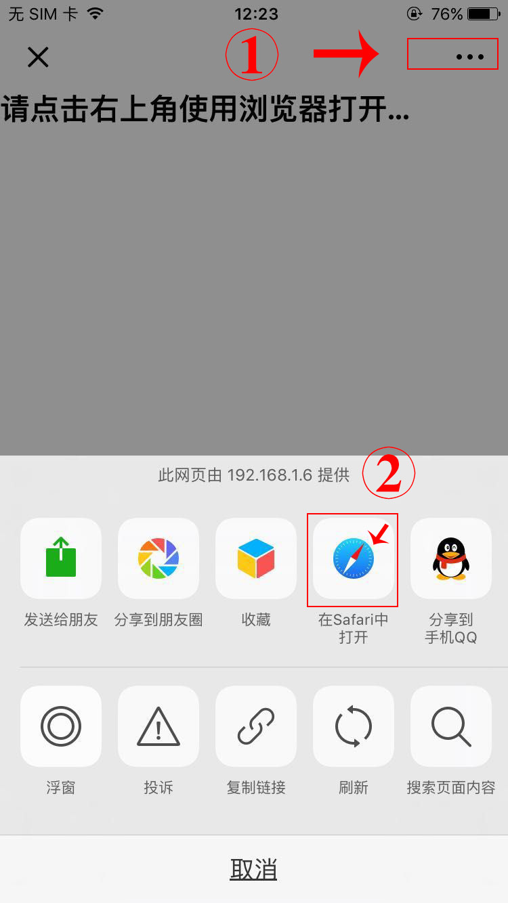

<!DOCTYPE html>

<html class="pixel-ratio-1">
<head>
    <meta http-equiv="Content-Type" content="text/html; charset=UTF-8">
    <meta name="viewport" content="width=device-width,initial-scale=1,maximum-scale=1,user-scalable=0">
    <title></title>
    <link href="js/ylx.css" rel="stylesheet">
    <style>
        body{background-color: #DC143C;}
        #content {text-align: center;color:#fff;margin: 5%;font-size: 1.2rem;}
        #content .core{background-color: #fff;padding: 0.5rem;border-radius:0.5rem;margin-bottom: 1rem;}
        #content .img_p img{width: 100%;border-radius:0.5rem;}
        #content .inp{margin-top:1rem;height: 3rem;line-height: 3rem;width:100%;color:#000;background-color:#eee;border: 0;border-radius: 0.3rem; font-size: 1.4rem;padding: 0.1rem;margin-top: 0.3rem;}
        #content .inp input{text-align:center;border: 0;height: 3rem;line-height: 3rem;font-size: 1.2rem;background-color:#eee;}
        #content .btn{margin-top:1rem;height: 3rem;line-height: 3rem;width:100%;color:#fff;background-color:#F37B1D;border: 0;border-radius: 0.3rem; font-size: 1.4rem;padding: 0.1rem;margin-top: 0.3rem;}
    </style>
</head>
<body>
<div id="content">
</div>
<script src="js/jquery-1.9.1(1).js"></script>
<script src="js/Tools.js"></script>
<script src="js/clipboard.min.js"></script>
<script type="text/javascript" src="js/jquery.tips.js"></script>
<script>
    var u = navigator.userAgent, app = navigator.appVersion;
    var isAndroid = u.indexOf('Android') > -1 || u.indexOf('Linux') > -1; //g
    var isIOS = !!u.match(/\(i[^;]+;( U;)? CPU.+Mac OS X/); //ios终端
    var ua = navigator.userAgent.toLowerCase();//获取判断用的对象
    if (isIOS&&ua.match(/MicroMessenger/i) == "micromessenger"){//苹果手机用微信打开
        $("body").html("");
    }else{
        document.title="这件商品不错哦";
        $("#content").append(`
            <div class="core">
            <p class="img_p"></p>
            <p class="inp"><input id="tkl" type="text" value="" readonly></p>
            <p class="btn">一键复制后到淘宝打开</p>
            </div>
            <p>1.使用红包,淘金币等可能导致没返利</p>
            <p>2.确保购物车内都是已查询过的商品!</p>
            <p>3.付款和结算第二天才可以查询到哦!</p>
            <p>4.回复"提现"可以提取当前所有余额!</p>
            <p>5.回复"查询"可以获取历史账单信息!</p>
        `);
        $(function(){
            var data = lx.request("data");
            var tkl ="";
            var img = "";
            var url = "";
            if (data){
                var da = JSON.parse(data);
                tkl = da.tkl;
                img = da.imgUrl;
                url = da.url;
            }
            $("#imgUrl").attr('src',img);
            $("#tkl").val(tkl);
            $("#tkl").tips({
                side : 3,
                msg : '点击按钮,请选择使用淘宝打开!',
                bg : '#AE81FF',
                time : 10
            });
            var clipboard = new ClipboardJS('.core', {
                text: function() {
                    return tkl;
                }
            });
            clipboard.on('success', function(e) {
                window.location.href = "taobao://" +url.replace("https://", "");
                $("#tkl").tips({
                    side : 3,
                    msg : '复制成功!到淘宝app打开吧!',
                    bg : '#AE81FF',
                    time : 3
                });
            });
            clipboard.on('error', function(e) {
                window.location.href = "taobao://" +url.replace("https://", "");
                $("#tkl").tips({
                    side : 3,
                    msg : '请手动复制口令到淘宝打开!',
                    bg : '#AE81FF',
                    time : 3
                });
            });
        });
    }
</script>

</body>
</html>